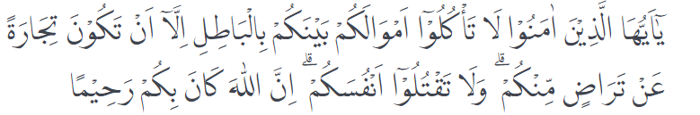

Bab-4: Hidup Berkah Dengan Ekonomi Islam
Sekarang ini ekonomi Islam berkembang di dunia nonIslam, seperti di Inggris, Singapura, dan lainnya. Kita harus semakin terbuka dan bisa mengerti bahwa ekonomi Islam memang sudah saatnya dikaji dan dikembangkan serta diupayakan sedemikian rupa sehingga menjadi solusi ekonomi yang
bisa diandalkan. Keandalan ekonomi Islam juga sudah mulai diakui oleh bank-bank konvensional. Hal ini dibuktikan bank konvensional membuka divisi bank Syari’ah. Bank Syari’ah adalah salah satu bentuk jenis ekonomi Islam. Dalam transaksi ekonomi Islam harus halal, baik barang yang dijual belikan maupun cara mendapatkannya dan thayyib (baik untuk dikonsumsi). Karenanya, mari kita belajar tentang ekonomi Islam.
Pengertian Mu'amalah
mu’amalah al-madiyah, yaitu aturan-aturan tentang pergaulan dan perhubungan manusia mengenai hidupnya. Ekonomi Islam bukan lahir sebagai suatu disiplin ilmu tersendiri, melainkan bagian integral dari agama Islam. Sebagai ajaran yang lengkap, Islam memberikan petunjuk terhadap semua aktivitas manusia, termasuk ekonomi. Karena sudah menjadi bagian dari agama Islam, maka ekonomi Islam memiliki sifat dasar sebagai ekonomi Rabbani dan Insani. Rabbani karena sarat dengan arahan dari nilai-nilai Ilahiah. Sedangkan ekonomi Islam dikatakan sebagai ekonomi insani, karena sistem ekonominya dilaksanakan dan ditujukan untuk kemakmuran manusia.
Dalam pembahasan ekonomi Islam, yang akan dipelajari adalah jual beli, khiyar, riba, utang-piutang, sewa-menyewa, syirkah, perbankan syariah, dan asuransi syariah. Pembahasan masing-masing akan dijelaskan di bawah ini.
Pengertian Jual Beli
Jual beli dalam bahasa Arab disebut dengan al-bai’. Dalam Kitab Al-Mufradat i Ghariibi al-Qur’an karya Ar-Raghib Al-Ashfahani dinyatakan bahwa jual beli dalam bahasa Al-Qur’an dikenal dengan kata al-bai’ yang artinya memberikan barang dan mengambil harga nilai atau menjual. Dengan kata lain, jual beli merupakan tukar menukarkan sesuatu dengan sesuatu berdasarkan keridhaan antara keduanya. Sedangkan secara syara’, jual beli adalah memindahkan hak milik dengan hak milik lain berdasarkan persetujuan dan hitungan materi.
Di antara prinsip dalam jual beli adalah keridhaan antara penjual dan pembeli. Hal ini termaktub dalam Q.S. an-Nisa/5: 29.
Artinya: Wahai orang-orang yang beriman! Janganlah kamu saling memakan harta sesamamu dengan jalan yang batil (tidak benar), kecuali dalam perdagangan yang berlaku atas dasar suka sama suka di antara kamu. Dan janganlah kamu membunuh dirimu. Sungguh, Allah Maha Penyayang kepadamu (Q.S. al-Nisa/5: 29).
Rukun Jual Beli
Rukun jual beli adalah sebagai berikut:
- Penjual dan pembeli
Syarat-syarat penjual dan pembeli adalah:
- berakal;
- memiliki kemampuan memilih;
- atas kehendak sendiri.
- Barang yang dijual
Syarat barang yang dijual adalah
- suci (halal dan baik);
- bermanfaat;
- milik orang yang melakukan akad;
- mampu diserahkan oleh pelaku akad;
- mengetahui status barang;
- barang tersebut dapat diterima oleh pihak yang melakukan akad.
- Alat tukar untuk membeli.
Sekarang ini alat tukar yang sah adalah berupa uang, kalau di Indonesia menggunakan uang rupiah. Sedangkan di luar negeri, alat tukarnya, menyesuaikan dengan mata uang masing-masing negara.
- Ijab Qabul
Ijab adalah kata-kata yang menyatakan kepemilikan secara jelas, misalnya: “Saya menjual barang ini kepadamu dengan harga sekian”
Nah, itulah teman-teman, kita sudah belajar tentang Jual Beli. Semoga teman-teman makin paham ya. Tetap semangat belajar dan nantikan materi kami selanjutnya. Sampai Jumpa!
Nah, kalau kamu ingin lebih banyak tahu soal Pendidikan Agama dan Budi Pekerti lagi? Yuk, bergabung di Mediapintar.com, kamu bisa belajar banyak hal di sana dan menjadi peneliti hebat, lho!.